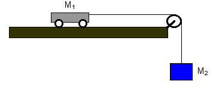
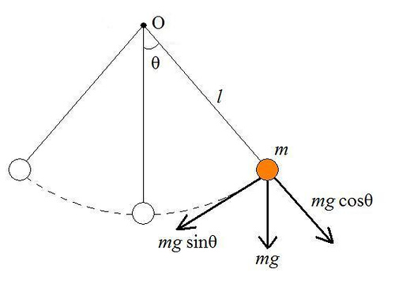
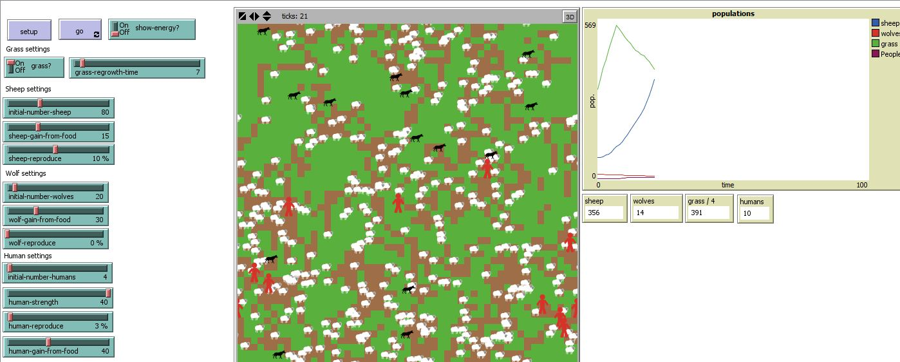
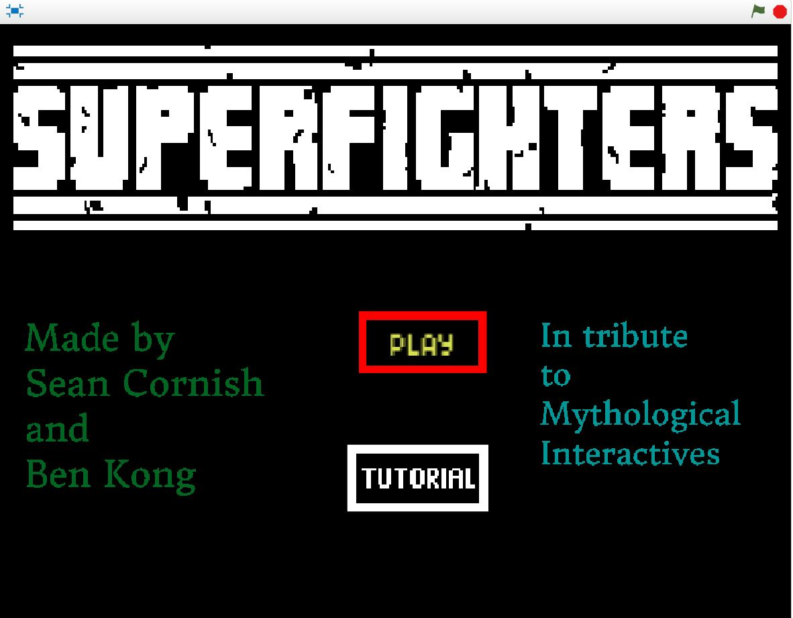

Sean Cornish
Student • Engineer • Visionary

system to learn more about the relationship
between mass, force, and acceleration by proving
that a system with constant force and more mass
will accelerate slower and a system of constant
mass with a greater force will accelerate quicker.

hanging mass, and objects with varying mass
and size to learn more about the moment of
inertia of different types of object by proving
that objects such as disc will have a smaller
rotational inertia that that of a rod with
weights at the end.

to learn more about how mass, length,
and height affect the period and amplitude of an
object in simple harmonic motion by proving that
Period is independent of mass and amplitude.

a modified version of the sheep-wolf predidation simulation.
Click to dowlnload the files and run our simulation to see
the relationship between wolves, sheep, grass, and humans
in the natural world. Run the simulation and consider the
prediction of population proportios that it proposes
.

and Sean Cornish. This game is a 2 player
shooter in 8-bit fashion. try to kill your
opponent and be the last man standing.
players play with up, left, and right through
an obstacle course of fun and amazement.

numbered by priority. This list includes
specific notes on each aspect of the game, and
the current status of the objectives we set for
ourelves.
conways game of life, a game devised by a famous
mathemetician. Give it a try and see how you fare!

a python file which analyses NBA teams popularity and
how frequently they win. The file represents trends in
the form of a scatter plot with a line of best fit.
A design brief is provided to explain the thought
process and the solution to the problem given.